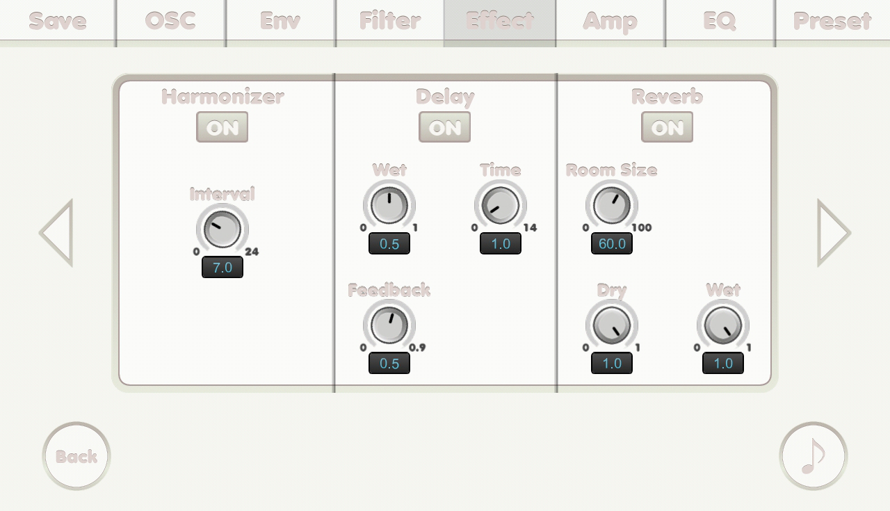

{% include JB/setup %}
Effect screen(2)

- ON button: to turn the effect on.
- Interval knob: interval.
- Wet knob: 0 is 100% DRY and 1 is 100% WET.
- Time knob: delay time in second.
- Feedback knob: feedback.
- Level knob: level.
- Threshold knob: threshold.
- Attack knob: attack time in millisecond.
- Release knob: release time in millisecond.
- Swipe horizontally to go to another page.